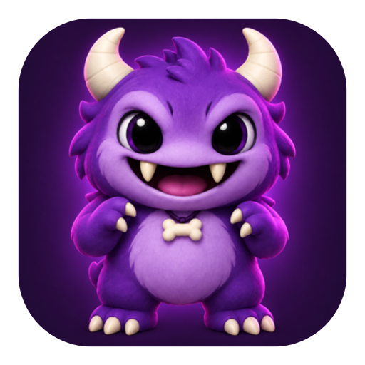

A warm welcome
Invite a teammate, grant the right app access, and add them to TestFlight groups with one reusable preset.

App Store Connect, tamed.
Team access, app permissions, and TestFlight testers.
All the little monsters, in one place.
Native Mac app · macOS 26+
brew install jason/tap/fnbInvite a teammate, grant the right app access, and add them to TestFlight groups with one reusable preset.
Look up a person across your apps. Preview an offboarding plan before removing their access.
Review each planned change before it runs. Onboarding picks up where it left off when an invitation is accepted.
A native SwiftUI interface and a command-line tool, powered by the same engine and reusable presets.